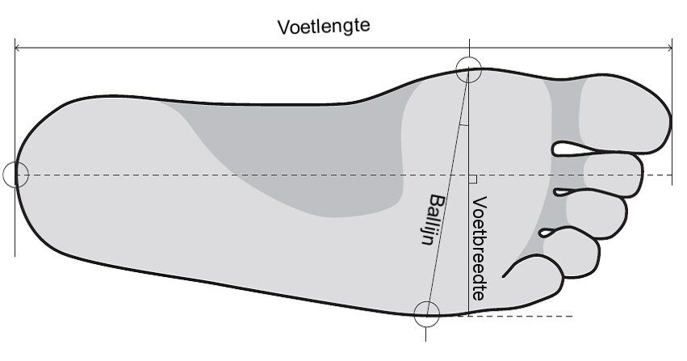
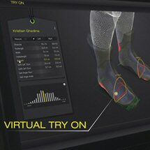
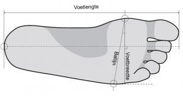
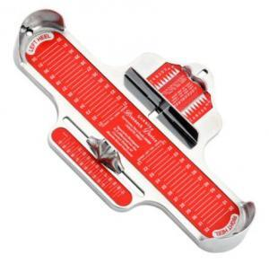

Gebruiken jullie geen 3D scanner om de voeten te meten? Dat is een vraag die ons wel eens wordt gesteld. Nee, wij gebruiken geen 3D scanner voor het maken van op maat gemaakte skischoenen. Hoe wij het wel doen leest u verderop. Maar wat is dat eigenlijk voor apparaat dat u steeds vaker ziet verschijnen in skishops?
Sinds een aantal jaren proberen diverse leveranciers en fabrikanten van steunzolen het zogenaamde bootfitting naar de skishop te brengen. Tien jaar geleden met verwarmbare binnenschoenen, daarna met skischoenen die gedeeltelijk vervormbaar waren en de laatste tijd met thermoplastische buitenschoenen.
Of het enkel in de oven zetten of verwarmen van de buitenschoen bootfitting is, daarover volgende keer meer. Maar het belangrijkste en misschien ook wel het moeilijkste gedeelte van skischoenen aanmeten is de juiste maat bepalen. En daarvoor bedacht men de 3D voetscanner.
Wat is dat eigenlijk een 3D voetscanner voor skischoenen?
Met een 3D (3 dimensionale) scanner scant men de ruimtelijke contouren van de voeten en enkels.

Het systeem kan nu de grote van de voet en het volume berekenen. (Dit laatste is belangrijk voor de hoogte van de wreef). Ook berekent de computer de breedte van de voet ter hoogte van de zogenaamde ballijn. Er wordt nu een model gemaakt op het scherm en een 3D plaatje van de voeten wordt zichtbaar.Een aantal van deze systemen hebben in de database ingescande skischoenen staan die worden vergeleken met de 3D-scan van de voeten. Dit wordt wel 'Virtual try on' genoemd. Op basis van deze scans kan de verkoper in de skiwinkel de best passende skischoen adviseren. Het maakt bij veel klanten nogal indruk. Prachtig stuk techniek en skicomfort verzekerd zou je denken…
Waarom gebruikt DutchBootFitter geen 3D scanner?
Een scanner kan prima voeten opmeten en zaken als voetvolume en voetlengte uitrekenen.

Hoewel, ook daar kan het fout gaan: Sommige scanners berekenen de ballijn van de voet terwijl bij de breedte van een skischoenen de leest- of voetbreedte wordt bedoeld. Zie de tekening hiernaast. Dat scheelt toch wel een 'Pythagoras' ;-)Dingen die een 3D scanner niet kan meten

Een 3D scanner is in feite niets meer dan een intelligente voetmeter. Het systeem meet nauwkeurig de voet en enkel op maar verder onderzoek doet het niet.Als u bij ons komt voor het aanmeten van op maat gemaakte skischoenen dan nemen wij bij u een assessment af. Wij vragen naar uw skiniveau, klachten en blessures in het verleden en wat u precies gaat doen op de berg (pist/ off-piste, toerskiën, sportieve vakantie etc. etc…). Het verschilt niet veel van een podologisch consult.
Functietesten
Maar wellicht even belangrijk, zo niet belangrijker zijn de zogenaamde functietetsen. Wij onderzoeken uw enkel- en voorvoetstand en de stand van uw knieën. We testen de flex in uw enkelgewricht en de flexibiliteit van uw voetgewrichten etc. etc. De uitslag van deze functietesten vormen de basis voor de keuze van de buitenschaal en binnenschoen.
Zolang een 3D scanner of welke andere computer dan ook geen functietesten kan uitvoeren of u vragen kan stellen over klachten in het verleden en hieruit een conclusie kan trekken én advies geven, werken wij bij DutchBootFitter met registerpodologen. Ervaren voetspecialisten met verstand van zaken!